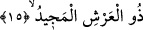

dolduran Senin yüzünün nuru vesilesiyle Senden diliyorum. Bütün mahlukatını takdir
ettiğin kudretinin vesilesiyle herşeyi kuşatan rahmetinin adına Senden diliyorum.
Senden başka hiçbir ilah yoktur. Ey imdada koşan bana imdat et. Ey imdada koşan
bana imdat et. Ey imdada koşan bana imdat et.” Bu rivâyeti bir çok imam zikretmiştir.
Fakir (Bursevî) der ki: Ben kalbimin diliyle “Ya Vedud” ismini seher vakitlerinde
durmadan zikrediyordum. Sonra kendi irade ve ihtiyarım olmadan “Ya Rabbi beni
herşeyi anlar kıl” demeye başladım. Bu zikirden sonra anladım ki el-Vedud isminin
herşeyi anlamakta büyük bir etkisi varmış. Çünkü el-Vedud ismi “el-mahbub/sevgili”
anlamına geliyor. Hiç kuşkusuz Allah Teâlâ’nın bütün isimleri İsm-i Azam’ı sever ve
ona meyleder. İsm-i Azam ise sevilendir, diğerleri sevendir. Şu halde her kim “Vedud”
ismini “sevgili” anlamına alarak zikrederse o kimseyi bütün mazâhir sever. Bu kimse,
Allah Teâlâ’nın bütün isimlerinin sırrını öğrenir ve böylece bütün tevcihler o kimseye
ulaşır.
15. Arş’ın sâhibidir, çok yücedir.
“O arşın sâhibidir” yâni yaratıcısıdır. Bazıları arş’tan maksadın mecâzen Allah’ın
mülkü demek olduğunu ifâde etmişlerdir. Buna göre âyetin mânâsı; o süflî alemdeki
mahlukat ile ve ulvi yaratıkların üzerinde -her ne kadar bir tahtta oturuyor olmasa da-
hâkimiyet ve otorite sâhibidir, demek olur.
“Çok yücedir.” O’nun zatı yücedir, fiilleri güzeldir, atâ ve ihsanı boldur. Dolayısıyla
o zatı şerefli olandır. Kendisine “Mecîd” denmesi bundandır. O aynı zamanda “el-
Macid”dir. Fakat bu iki isimden birincisi yâni el-Mecîd mubalağa ifâde eder. Buna göre
el-Mecîd ismi el-Celil, el-Vehhab ve el-Keriym isimlerini bir arada toplamış gibidir.
Kamus’ta açıklandığına göre el-Mecîd yüce ve âlî, el-Keriym ise fiilleri şerefli
demektir. Temcid ise Allah’ı ta’zim etmek, O’nu öğmek demektir. Atâ ise bunun bolluğu,
temhide gelince Allah’ın güzel sıfatlarını zikretmek demektir.
el-Meciyd kelimesi arş kelimesinin sıfatı olarak sonu esreli okunmuştur. Arş’ın Mecîd
olması cihet olarak yüksek, değerinin büyük ve biçimi ile terkibinin güzel olması
demektir. Çünkü arş terkib ve biçim itibariyle cisimlerin en güzelidir. Bir hadis-i şerifte
şöyle buyurulur: “Arş’ın büyüklüğü yanında kürsi çöle atılmış bir yüzük halkası
gibidir.” [64] Bunca genişliğine rağmen kürsü bir yüzük halkası gibi kalırsa o zaman
diğer ulvî ve suflî yer ve gök cisimlerinin durumunu sen hesab et.
Sehl (rh.) şöyle diyor: Allah Teâlâ zâtının mekânı olarak değil ve ihtiyacı olduğu için
de değil, sâdece kudretini ortaya koymak için Arş’ın üzerinde zuhûr etmiştir. Bazıları
şöyle der: Tuhaf olan ve hayret veren şudur ki Allah Teâlâ bunca genişliğine rağmen
Arş’ı mısır taneleri ile doldursa ve sonra bir kuş yaratsa ve bu kuş her bin senede bir